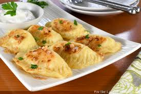

Pierogi

Description
Filled dumplings made by wrapping unleavened dough around a savoury or sweet filling and cooking with water
Pierogi are associated mainly with the Central and Eastern European Cuisine, though they most likely originated in China and were introduced in Europe during the Middle Ages
Ingredients
- 5 cups all-purpose flour
- One teaspoon of salt
- 3 Large eggs
- 5 ounces cream cheese
Steps
- In a food processor, combine flour and salt; cover and pulse to blend. Add water, eggs and butter; cover and pulse until dough forms a ball, adding an additional 1 to 2 tablespoons of water or flour if needed. Let rest, covered, 15 to 30 minutes
- Place potatoes in a large saucepan and cover with water. Bring to a boil over high heat. Reduce heat; cover and simmer until tender, 10-15 minutes. Meanwhile, in a large skillet over medium-high heat, saute onions in butter until tender
- Drain potatoes. Over very low heat, stir potatoes until steam has evaporated, 1-2 minutes. Press through a potato ricer or strainer into a large bowl. Stir in cream cheese, salt, pepper and onion mixture
- Divide dough into 4 parts. On a lightly floured surface, roll 1 portion of dough to 1/8-in. thickness; cut with a floured 3-in. biscuit cutter. Place 2 teaspoons of filling in center of each circle. Moisten edges with water; fold in half and press edges to seal. Repeat with remaining dough and filling